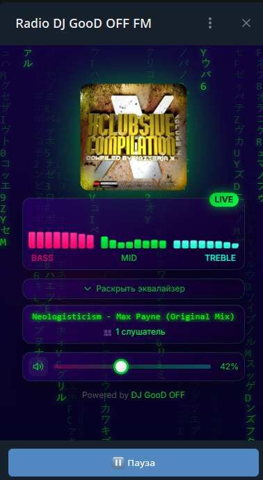

● LIVE DOCUMENTATION v1.0
DJ GooD OFF FM
Radio
Telegram Mini App для прослушивания онлайн-радио прямо в мессенджере Telegram. Приложение работает как веб-сайт, который открывается внутри Telegram и выглядит как нативное приложение.
01
Описание проекта
Какие задачи решает
Радио в Telegram
Прослушивание радио без установки отдельных приложений — пользователь просто открывает Mini App в Telegram
Now Playing
Отображение названия текущего трека — автоматически обновляется каждые 5 секунд
Визуальный эквалайзер
Показывает частоты звука в реальном времени — 24 полосы визуализации
Настройка звука
3-полосный эквалайзер (Bass/Mid/Treble) + усиление громкости до 250%
Подсчёт слушателей
Показывает сколько человек слушают радио прямо сейчас через Cloudflare D1
Загрузка обложек
Автоматический поиск обложек треков в Last.fm и Apple Music
Как работает (простым языком)
ПОЛЬЗОВАТЕЛЬ
Открывает Telegram → нажимает на Bot → открывается Mini App
Загружается
MINI APP
Мини-приложение загружается с сервера Vercel
Подключается
AZURACAST
Приложение подключается к аудиопотоку AzuraCast
Результат
МУЗЫКА
Пользователь слышит музыку и видит название трека
Важные понятия
Telegram Mini App — веб-страница, которая открывается внутри Telegram как приложение
AzuraCast — программа на сервере, которая вещает радио в интернет
Cloudflare Worker — маленькая программа в облаке, которая передаёт данные между сервером и приложением
AzuraCast — программа на сервере, которая вещает радио в интернет
Cloudflare Worker — маленькая программа в облаке, которая передаёт данные между сервером и приложением
Стек технологий
| Категория | Технология | Зачем нужна |
|---|---|---|
| Frontend | Next.js 14 | Фреймворк для создания веб-приложения |
| UI | React 18 | Библиотека для создания интерфейса |
| Стили | Tailwind CSS | Быстрое написание CSS стилей |
| Анимации | Framer Motion | Плавные анимации интерфейса |
| Иконки | Lucide React | Красивые иконки |
| Аудио | Web Audio API | Обработка звука в браузере |
| Backend | Next.js API Routes | Серверные функции |
| Workers | Cloudflare Workers | Обработка запросов в облаке |
| База данных | Cloudflare D1 | Хранение данных о слушателях |
| Радио-сервер | AzuraCast | Вещание аудиопотока |
02
Интерфейс

TELEGRAM WEBVIEW
Matrix Background
Анимированный фон с падающими японскими и латинскими символами
Визуализатор 24 полосы
Bass (розовый) · Mid (зелёный) · Treble (голубой)
Обложка альбома
Автоматический поиск через Last.fm и Apple Music
Бегущая строка
Название трека с эффектом Matrix-перебора символов
Эквалайзер
Bass / Mid / Treble от −12 до +12 dB · 6 пресетов (Flat, Bass, Electronic, Rock, Vocal, Club)
Громкость 0–250%
Усиление через Web Audio API GainNode
Основные функции
1
Play/Pause
Запуск и остановка воспроизведения
2
Громкость
Регулировка от 0% до 250% (с усилением)
3
Эквалайзер
Настройка Bass/Mid/Treble от -12 до +12 dB
4
Пресеты
Готовые настройки: Flat, Bass, Electronic, Rock, Vocal, Club
5
Бегущая строка
Показывает название трека с эффектом Matrix
6
Обложка
Автоматический поиск обложки альбома
03
Архитектура
Как устроен проект
TELEGRAM
Пользователь открывает Mini App через бота
Загружает веб-приложение
FRONTEND — Next.js на Vercel
RadioMiniApp.tsx · MatrixBackground · MarqueeText · Web Audio API · Telegram WebApp API
API запросы
CLOUDFLARE WORKERS
nowplaying-worker — текущий трек · listeners-worker + D1 — счётчик слушателей · radio-stream — HTTPS прокси аудио
Метаданные радио
AZURACAST
Liquidsoap + Icecast · MP3 поток 24/7 · API /api/nowplaying · Метаданные треков
Связь между частями
| Откуда | Куда | Что передаётся |
|---|---|---|
| Frontend | /api/now-playing | GET запрос текущего трека |
| /api/now-playing | Cloudflare Worker | GET запрос к AzuraCast |
| Frontend | /api/listener | POST (регистрация/heartbeat) |
| Frontend | AzuraCast Stream | Аудиопоток MP3 |
| Frontend | /api/cover | GET запрос обложки |
| /api/cover | Last.fm / Apple Music | Поиск обложки |
Схема данных
// AzuraCast API Response:
{
"now_playing": {
"song": {
"text": "Artist - Title (Mix)",
"art": "https://..."
},
"duration": 240,
"elapsed": 120
},
"listeners": { "total": 5 },
"is_online": true
}
// Worker обрабатывает:
// - Удаляет мусор из названия (Camelot keys, URLs, etc.)
// - Форматирует в Title Case
// - Возвращает JSON
// Frontend получает:
{
"title": "Artist - Title (Mix)",
"artist": "Artist",
"listeners": 5,
"online": true
}
04
Требования
Минимальные требования
| Компонент | Требование | Как проверить |
|---|---|---|
| Компьютер | Любой современный ПК/ноутбук | — |
| ОС | Windows 10+, macOS 10.15+, Linux | — |
| RAM | 4 GB минимум | — |
| Место на диске | 2 GB | — |
Программное обеспечение
Node.js 18+
Для запуска JavaScript. Скачать: nodejs.org
npm 9+
Входит в состав Node.js. Для установки зависимостей
Git 2+
Для клонирования репозитория. Скачать: git-scm.com
Для production (публичный доступ)
| Сервис | Зачем нужен | Цена |
|---|---|---|
| Vercel | Хостинг фронтенда + автодеплой | Бесплатно |
| Cloudflare Workers | Workers + D1 база данных | 100k запросов/день — бесплатно |
| AzuraCast | Вещание радио (self-hosted) | Бесплатно |
| Домен | Красивый адрес (опционально) | От $10/год |
05
Полный туториал для новичка
Важно
Этот туториал написан для человека, который никогда не поднимал сервер и не работал с радио. Каждый шаг объясняется подробно.
ШАГ 1 — Установка нужных программ
1.1
Установка Node.js
Windows: Скачайте LTS версию с nodejs.org, запустите установщик
macOS: brew install node
Linux: sudo apt install nodejs npm
macOS: brew install node
Linux: sudo apt install nodejs npm
1.2
Установка Git
Windows: Скачайте с git-scm.com/download/win
macOS/Linux: git --version (обычно уже установлен)
macOS/Linux: git --version (обычно уже установлен)
1.3
Регистрация на сервисах
Vercel: vercel.com → Sign Up → Continue with GitHub
Cloudflare: dash.cloudflare.com/sign-up
Cloudflare: dash.cloudflare.com/sign-up
ШАГ 2 — Настройка радио (AzuraCast)
Примечание
Если у вас уже есть работающий радио-сервер, пропустите этот шаг.
AzuraCast — это бесплатная программа для создания интернет-радио. Она включает Liquidsoap (вещание), Icecast (сервер раздачи) и Web-интерфейс.
# Вариант А: Свой сервер (рекомендуется для production)
ssh root@IP_АДРЕС_СЕРВЕРА
curl -fsSL https://get.docker.com | sh
mkdir -p /var/azuracast && cd /var/azuracast
curl -fsSL https://raw.githubusercontent.com/AzuraCast/azuracast/main/docker.sh > docker.sh
chmod a+x docker.sh && ./docker.sh install
# Вариант Б: VirtualBox (рекомендуется для Windows)
# 1. Скачайте VirtualBox с virtualbox.org
# 2. Создайте VM с Ubuntu Server
# 3. Настройте сеть: NAT + Bridged Adapter
# 4. Установите Docker и AzuraCast как выше
ШАГ 3 — Настройка станции в AzuraCast
3.1
Создайте станцию
Add New Station → Name: DJ GooD OFF FM → Save
3.2
Загрузите музыку
Music Files → Upload → выберите MP3 файлы
3.3
Настройте плейлист
Playlists → Создайте General Rotation → добавьте файлы
3.4
Получите URL потока
Public Pages → Stream URL (например: https://server.com/listen/station/radio.mp3)
ШАГ 4 — Telegram Bot
4.1
Создайте бота
@BotFather → /newbot → введите имя и username
4.2
Настройте Mini App
@BotFather → /newapp → введите название, описание, URL вашего приложения
4.3
Получите ссылку
BotFather пришлёт ссылку: https://t.me/ВашБот?startapp
ШАГ 5 — Запуск фронтенда
# Клонируйте репозиторий
git clone https://github.com/gondurass89-cmyk/DJGooDOFFFM
cd DJGooDOFFFM
npm install
# Создайте .env.local
NEXT_PUBLIC_STREAM_URL=https://ваш-сервер/listen/station/radio.mp3
NEXT_PUBLIC_NOWPLAYING_WORKER=https://nowplaying.ваш-аккаунт.workers.dev
NEXT_PUBLIC_LISTENERS_WORKER=https://listeners.ваш-аккаунт.workers.dev
# Запуск локально
npm run dev
# Деплой на Vercel
git push origin main # Vercel автоматически задеплоит
ШАГ 6 — Деплой Cloudflare Workers
# Установите wrangler
npm install -g wrangler
wrangler login
# Задеплойте workers
npx wrangler deploy workers/nowplaying-worker.js --name nowplaying
npx wrangler deploy workers/listeners-worker.js --name listeners
npx wrangler deploy workers/radio-stream-worker.js --name radio-stream
# Создайте D1 базу данных
npx wrangler d1 create nowplaying-db
06
Конфигурация
Файлы проекта
djgoodoff-fm/
├── src/app/
│ ├── radio-mini-app/
│ │ ├── RadioMiniApp.tsx ← ГЛАВНЫЙ КОМПОНЕНТ (1100+ строк)
│ │ ├── MatrixBackground.tsx ← Анимация падающих символов
│ │ ├── MatrixText.tsx ← Эффект перебора символов
│ │ └── MarqueeText.tsx ← Бегущая строка
│ ├── api/
│ │ ├── now-playing/route.ts ← API: текущий трек
│ │ ├── cover/route.ts ← API: поиск обложки
│ │ └── listener/route.ts ← API: трекинг слушателей
│ └── layout.tsx ← Telegram SDK
├── workers/
│ ├── nowplaying-worker.js ← Трек из AzuraCast
│ ├── listeners-worker.js ← Счётчик слушателей
│ └── radio-stream-worker.js ← Прокси потока
└── package.json ← Зависимости
Настройка аудиопотока
// В файле RadioMiniApp.tsx, строка 20-21:
const STREAM_URL = 'https://your-radio-server.com/listen/station-name/radio.mp3'
// Замените на свой URL:
const STREAM_URL = 'https://ваш-домен/listen/название_станции/radio.mp3'
Настройка стилей
// Цветовая схема (RadioMiniApp.tsx, строки 33-42):
const COLORS = {
primary: '#2e0071', // Основной цвет (фиолетовый)
secondary: '#00c730', // Вторичный цвет (зелёный)
accent: '#00ff40', // Акцентный цвет (ярко-зелёный)
bass: '#ff0066', // Цвет басов (розовый)
mid: '#00c730', // Цвет средних частот (зелёный)
high: '#00ffcc', // Цвет высоких частот (голубой)
}
07
API
GET
/api/now-playing
Текущий трек
{
"title": "Artist - Title (Mix)",
"artist": "Artist",
"listeners": 5,
"online": true,
"art": "https://...",
"duration": 240,
"elapsed": 120
}
GET
/api/cover?artist=…&title=…
Обложка трека
Параметры:
artist, title, azuracast_art (опц.){ "cover": "https://...", "source": "lastfm" }
POST
/api/listener
Регистрация слушателя
Действия:
open · heartbeat (каждые 30 сек) · close// Request
{ "user_id": 123, "first_name": "Иван", "action": "open" }
// Response
{ "success": true, "total": 5 }
Схема D1 базы данных
-- Таблица слушателей
CREATE TABLE listeners (
user_id INTEGER PRIMARY KEY,
first_name TEXT,
last_name TEXT,
username TEXT,
is_admin INTEGER DEFAULT 0,
is_telegram INTEGER DEFAULT 0,
last_heartbeat INTEGER
);
08
Устранение ошибок
Ошибка: "Таймаут загрузки"
Причины: Аудиопоток недоступен, проблема с HTTPS, CORS ошибка
Решение: Проверьте URL потока в браузере, убедитесь что SSL валидный
Решение: Проверьте URL потока в браузере, убедитесь что SSL валидный
Ошибка: "Ошибка сети"
Причины: Нет интернета, сервер недоступен, блокировка провайдером
Решение: Проверьте соединение, статус AzuraCast, попробуйте VPN
Решение: Проверьте соединение, статус AzuraCast, попробуйте VPN
Telegram Mini App не открывается
Причины: URL не HTTPS, URL не добавлен в BotFather, Telegram старой версии
Решение: Используйте HTTPS, выполните /newapp в @BotFather, обновите Telegram
Решение: Используйте HTTPS, выполните /newapp в @BotFather, обновите Telegram
Визуализатор не работает
Причины: iOS устройство (это нормально — fallback режим), WebAudio не инициализирован
Решение: На iOS используется симуляция, на других устройствах нажмите Play ещё раз
Решение: На iOS используется симуляция, на других устройствах нажмите Play ещё раз
Эквалайзер не влияет на звук
Причины: iOS устройство — WebAudio ограничен на iOS
Решение: К сожалению, это ограничение Apple/Safari
Решение: К сожалению, это ограничение Apple/Safari
Счётчик слушателей не работает
Причины: Worker не развёрнут, D1 база не создана, CORS ошибка
Решение: Разверните listeners-worker, создайте D1 database
Решение: Разверните listeners-worker, создайте D1 database
Название трека не обновляется
Причины: Worker не отвечает, AzuraCast API недоступен, кеширование
Решение: Проверьте статус nowplaying-worker, добавьте _t=timestamp к запросу
Решение: Проверьте статус nowplaying-worker, добавьте _t=timestamp к запросу
09
FAQ
Как добавить свой логотип?
Замените файл public/logo.png на свой. Рекомендуемый размер: 512x512 пикселей.
Как изменить название станции?
В файле RadioMiniApp.tsx измените STATION_NAME = 'DJ GooD OFF FM' на своё.
Как изменить частоту обновления трека?
В RadioMiniApp.tsx найдите setInterval(fetchCurrentTrack, 5000) — измените 5000 (миллисекунды) на нужное значение.
Почему на iOS нет эквалайзера?
Safari на iOS ограничивает Web Audio API — нельзя использовать createMediaElementSource с элементами из другого домена. Это ограничение Apple.
Как увеличить максимальную громкость?
Измените коэффициент в строке (volume / 100) * 2.5. 2.5 = 250%, 3.0 = 300% и т.д.
Как добавить новый пресет эквалайзера?
В RadioMiniApp.tsx найдите EQ_PRESETS и добавьте: myPreset: { name: 'Мой Пресет', bass: 4, mid: 2, treble: -2 }
Сколько стоит хостинг?
Vercel (frontend) — бесплатно для personal проектов. Cloudflare Workers — 100,000 запросов/день бесплатно. AzuraCast нужен свой сервер (от $4-12/мес).
Можно ли убрать рекламу из метаданных трека?
Worker автоматически очищает URL, Camelot keys, Energy levels и другой мусор. Если остались проблемы — добавьте паттерны в cleanTrackTitle() в nowplaying-worker.js.
10
Roadmap
Версия 1.2
Оффлайн режим с Service Worker
PWA manifest для установки
История прослушанных треков
Ссылка на трек в Spotify
Версия 1.3
Чат слушателей
Запросы песен
Голосование за треки
Интеграция с Last.fm
Версия 2.0
Несколько станций
Персональные рекомендации
Подкасты и записи эфиров
Монетизация
11
Полезные ссылки
Next.js документация
nextjs.org/docs
Telegram Mini Apps
core.telegram.org/bots/webapps
Web Audio API
developer.mozilla.org
AzuraCast документация
azuracast.com/docs
Cloudflare Workers
developers.cloudflare.com
Tailwind CSS
tailwindcss.com/docs
DOCUMENTATION v1.0
Создано: 2026-05-06 · GitHub: gondurass89-cmyk/DJGooDOFFFM